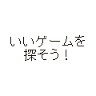

ゲーム日記です。
6.市場って便利ですね。
市場って売りに出しても売れるかどうかわかんないので、あんまり利用していなかったんですが、ちょっといいアイテムだったら売れるので小銭が入っていいですね。
職業が違って使えないスキルの書や、ちょっと色の違うアイテムを売るようにしています。
あと、納品アイテムが安く売ってたりします。
武器の合成とかしなくても、買って直ぐに納品できるので楽ちんです。
ページTOPへ
7.ランクってあるんですね。
レベルを上げれば強くなれるって思って、せっせと戦ってレベル上げしてたんですが、名声が上限いっぱいに
なって上がらなくなってしまいました。
名声って何の役に立つの？なんて思いますが、せっかくクエストを解いても、名声ポイントが貰えないのはもったいないです。
名声の上限を上げるには、ランクとやらを上げないといけないみたいです。
ランクを上げるには重要なクエストなんかをクリアしないと駄目みたいです。
私は敵を倒せばよかったみたいで、倒したらランクが上がって解決しました。
沢山の人とパーティー組んで、レベル低くてもどんどん先に進めた方が良さそうですね。
なんでもわりとそうなんですが、ゲームを始めたばかりなので楽しいです。
シルベリーに入って、ファイターに転職しました。
クエストがまだ簡単なので、サクサクとクリアしています。
キルギム草原 昼で戦っています。
ページTOPへ
8.ダミーキャラ作成
ログレスをスタートすると、キャラ選択画面が出てきて使うキャラを選んで始めますよね。
今まで1人しかキャラを作っていなかったんですが、もう一人追加してキャラをつくりました。
どうして作ったかというと、キャラが増えると倉庫が増えるんですよね。
トレード不可のアイテムは入れれませんが、そうじゃないものはどんどん入れれます。
これで倉庫の容量が倍になったの色んなものが入れれるようになりました。
とりあえずいつ使うか分からない、リングやネックレスを入れました。
ページTOPへ
9.ベビーザウルスに勝てない
。
クエストでベビーザウルスと戦うんですが勝てません。
今までは近くにいた人と、その場でパーティ組んで大人数で戦えば勝てていたんですが、今回はうまくいきません。
ベビーザウルスが強いので人数少ないと勝てないし、全員弱いと勝てないし、職業のバランスが悪くても勝てません。
もう何度も戦っているんですが、何かが足りなくて負けています。
ここらへんになると普通の敵も強いので、一人でふらふら歩いている人もいなくて、だいたいパーティー組んでいるんですよね。
その中に途中から仲間に入れてもらうんですが、皆さんクエストを持って戦っているので、途中から入った身でなかなか「ベビーザウルスと戦ってください」とは言いにくいんですよね。
すでに勝ってクエスト終了している人は、戦ってもたぶんなんの利益もないです。
なので頼みにくく、「何かある？」って聞かれて、「じゃあベビー」ってお願いして戦うんですが、まだ勝てていないです。
早くベビー戦を終えて次に進みたいです。
ページTOPへ
10.ベビーザウルス終了しました。
ベビーザウルス戦で行き詰っていたんですが、クリアしました。
一人で戦っている強いナイトさんを見つけたので、その人の戦いに参戦して仲間になりました。
その後ベビーザウルスの近くで仲間が2人加わって計4人で戦いました。
ナイト2人と戦士2人で、プリさんのいないパーティだったので「これは無理だな」と思ったんですがナイト2人の活躍で勝てました。
私の戦士は途中で倒れたんですが、パティーが勝ったため私も勝ちとなり、クエストが終了しました。
なんにも活躍しないでボーっと戦闘を見てるだけでクエスト達成で、ナイトさんに感謝でした。
でもファイターって弱くて役にあんまり立たないですね。
プリーストは回復で皆の役に立つし、魔法使いは攻撃が強力だし、ナイトはガードが固くて回復しながら戦えるしで、うらやましいです。
そういえばレンジャーとあんまり仲間になったことないな。
レンジャーってどうなんだろう？
とりあえず区切りがいいところでファイターは転職して別の職業に就きたいって思いました。
ページTOPへ